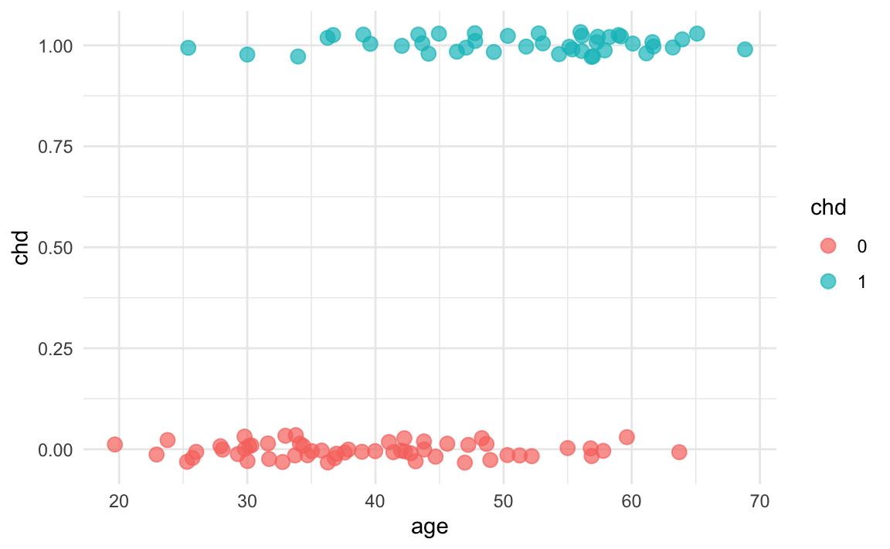
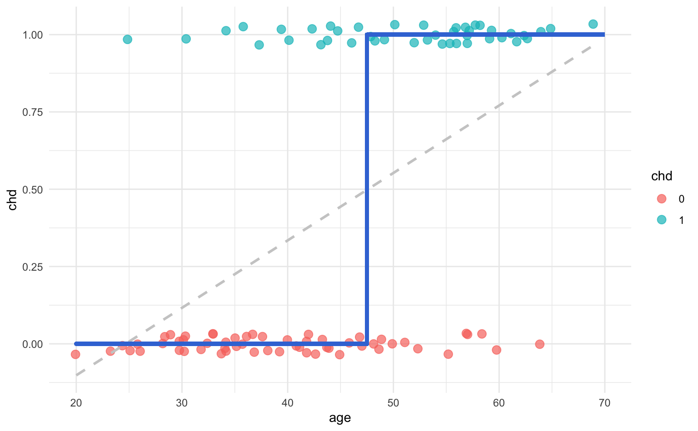
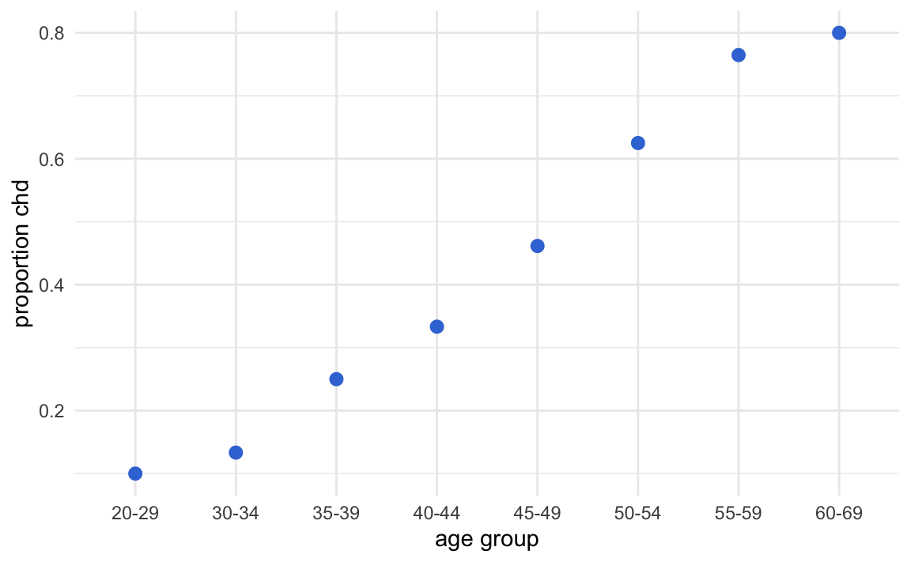

25 Logistic Regression
So far we’ve been dealing with the prediction of a quantitative response, using mostly linear models. But what about predicting a qualitative or categorical response? We now turn our attention to predicting a discrete (aka categorical) response.
To have a gentle transition from regression models into classification models, we’ll start with the famous logistic regression.
25.1 Motivation
Let’s consider a classic example: predicting heart attack. The data consists of a number of individuals (patients) with some medical variables.
The following (very famous) example is based on data found in Hosmer and Lemeshow (edition from 2000) in which we wish to predict coronary heart disease (chd). The data is relatively small (\(n = 100\) patients), and we start by considering only one predictor: age.
The following display shows a few data points in the data set. The predictor variable age is expressed in whole years. The response chd is a binary variable with 0 indicating absence of chd, and 1 indicating presence of chd.
#> age chd
#> 1 20 0
#> 2 23 0
#> 3 24 0
#> 4 25 0
#> 5 25 1
#> 6 26 0If we graph a scatterplot we get the following image. We have added a little bit of jitter effect to the dots, in order to better visualize their spread.

With respect to the x-axis (age), we have values ranging from small x’s to large x’s. In contrast, the response is a binary response, so there are only 0’s or 1’s. As you can tell, the distribution of points does not seem uniform along the x-axis. Moreover, for a given response value, say \(y_i = 0\) there are more small values \(x\) than large ones. And viceversa, for \(y_i = 1\), there are more large values \(x\) than small ones.
In other words, we can see that (in general) younger people are less likely to have chd than older people. Hence, there seems to be some information about chd in age. The goal is to fit a model that predicts chd from age:
\[ \textsf{chd} = f(\textsf{age}) + \varepsilon \tag{25.1} \]
25.1.1 First Approach: Fitting a Line
As a naive first approach, we could try to fit a linear model:
\[ \mathbf{\hat{y}} = b_0 + b_1 \mathbf{x} = \mathbf{Xb} \tag{25.2} \]
where:
\[ \mathbf{X} = \begin{pmatrix} 1 & x_1 \\ 1 & x_2 \\ \vdots & \vdots \\ 1 & x_n \\ \end{pmatrix}; \hspace{5mm} \mathbf{b} = \begin{pmatrix} b_0 \\ b_1 \\ \end{pmatrix} \]
So let’s see what happens if we use least squares to fit a line for this model.
# fit line via OLS
reg = lm(chd ~ age, data = dat)
summary(reg)
#>
#> Call:
#> lm(formula = chd ~ age, data = dat)
#>
#> Residuals:
#> Min 1Q Median 3Q Max
#> -0.85793 -0.33992 -0.07274 0.31656 0.99269
#>
#> Coefficients:
#> Estimate Std. Error t value Pr(>|t|)
#> (Intercept) -0.537960 0.168809 -3.187 0.00193 **
#> age 0.021811 0.003679 5.929 4.57e-08 ***
#> ---
#> Signif. codes: 0 '***' 0.001 '**' 0.01 '*' 0.05 '.' 0.1 ' ' 1
#>
#> Residual standard error: 0.429 on 98 degrees of freedom
#> Multiple R-squared: 0.264, Adjusted R-squared: 0.2565
#> F-statistic: 35.15 on 1 and 98 DF, p-value: 4.575e-08Looking at the estimated coefficients, in particular the coefficient of age, there seems to be some sort of positive relation between age and chd. Which, in this example, it does make sense and matches what we previously stated about younger patients are less likely to have chd (\(y = 0\)), whereas older patients are more likely to have chd (\(y = 1\)). To better see this, let’s take a look at the scatterplot, and see how the fitted line looks like:

This model yields a very awkward fit, with a couple of issues going on. For one thing, the regression line, and consequently the predicted values \(\hat{y}_i\), extend beyond the range \([0,1]\). Think about it: we could obtain fitted values \(\hat{y}_i\) taking any number between 0 and 1 (which, in this context, makes no sense). We could also get negative predicted values, or even predicted values greater than 1! (which also does not make sense). On the other hand, if we examine the residuals, then things don’t look great for the linear regression.

So, we need a way to fix these problems.
25.1.2 Second Approach: Harsh Thresholding
One idea to try to solve the issues from the regression line would be to set some threshold \(c\) (for example, \(c = 0.5\)) and look at how the predict \(\hat{y}_i\) compares to it:
\[ \hat{y}_i = b_0 + b_1 x_i \quad -vs- \quad c \]
If we think of the linear expression \(b_0 + b_1 x_i\) as the signal, we are basically comparing such signal against a specific threshold \(c\). Which in turn will allow us to create a decision rule. That is, for a given age value \(x_0\), compare its predicted value to the threshold. If \(\hat{y}_0 \geq 0.5\), classify it as “1,” otherwise classify it as “0.”
\[ \hat{y}_i = \begin{cases} 1 \quad \text{if} & b_0 + b_1 x_i \geq c \\ & \\ 0 \quad \text{if} & b_0 + b_1 x_i < c \end{cases} \tag{25.3} \]
We can further arrange the terms above to get the following expression:
\[ \hat{f}(x_i) = b_0 + b_1 x_i - c = \hat{y}_i \tag{25.4} \]
and then merge the two constant terms \(b_0\) and \(c\) into a single constant denoted as \(b_{0}^{'}\):
\[\begin{align*} \hat{f}(x_i) &= b_0 + b_1 x_i - c \\ &= (b_0 - c) +b_1 x_i \\ &= b_{0}^{'} + b_1 x_i \tag{25.5} \end{align*}\]
In vector notation, the above equation—the so-called signal—becomes:
\[ \hat{y} = \mathbf{b^\mathsf{T}x} \tag{25.6} \]
By paying attention to the sign of the signal, we can transform our fitted model into:
\[ \hat{y} = \text{sign}(\mathbf{b^\mathsf{T}x}) \tag{25.7} \]
that is:
\[ \hat{y}_i = \begin{cases} 1 \quad \text{if} & \text{sign}(b_{0}^{'} + b_1 x_i) \geq 0 \\ & \\ 0 \quad \text{if} & \text{sign}(b_{0}^{'} + b_1 x_i) < 0 \end{cases} \tag{25.8} \]
This transformation imposes a harsh threshold on the signal. Notice that the signal is still linear but we apply a non-linear transformation to it:
\[ \phi(x) = \text{sign}(x) \tag{25.9} \]

Think of this transformation as a quick fix. It’s definitely not something to be proud of, but we could use it to get the job done—although in a quick-dirty fashion.
25.1.3 Third Approach: Conditional Means
Using a sign-transformation allows us to overcome some of the limitations of the linear regression model, but it’s far from ideal.
An alternative approach involves calculating conditional means. How does that work? The idea is very simple and clever. Say you are looking at patients \(x = 24\) years old, and you count the relative frequency of chd cases. In other words, you count the proportion of chd cases among individuals 24 years old. This is nothing else than computing the conditional mean:
\[ avg(y_i | x_i = 24) \tag{25.10} \]
Following this idea, we could compute all conditional means for all age values:
\[ (\bar{y}|x_i = 25), \quad (\bar{y}|x_i = 26), \quad \dots, \quad (\bar{y}|x_i = 69) \]
Sometimes, however, we may not have data points for a specific \(x\)-value. So instead we can use groups of ages. For example, say we define a first group of ages to be 20 - 29 years. And then calculate the proportion of chd cases in this group. The corresponding average will be:
\[ avg(y_i | x_i \in \{ 20 - 29 \text{ years}\}) \tag{25.11} \]
In general, for a given group of age, we calculate the proportion of chd cases as:
\[ avg(y_i | x_i = \text{age group}) \tag{25.12} \]
Following our example, we can specify the following age groups:
#> age_group
#> 20-29 30-34 35-39 40-44 45-49 50-54 55-59 60-69
#> 10 15 12 15 13 8 17 10Now that we have age by groups, we can get the proportion of coronary heart disease cases in each age group. The results are displayed in the table below.
#> # A tibble: 8 x 3
#> age_group count_chd prop_chd
#> <fct> <int> <dbl>
#> 1 20-29 10 0.1
#> 2 30-34 15 0.133
#> 3 35-39 12 0.25
#> 4 40-44 15 0.333
#> 5 45-49 13 0.462
#> 6 50-54 8 0.625
#> 7 55-59 17 0.765
#> 8 60-69 10 0.8Likewise, we can graph these averages on a scatterplot:

Theoretically, we are modeling the conditional expectations: \(\mathbb{E}(y|x)\). Which is exactly the regression function.
By connecting the averages, we get an interesting sigmoid pattern
This pattern can be approximated by some mathematical functions, the most popular being the so-called logistic function:
\[ \text{logistic function:} \qquad f(s) = \frac{e^{s}}{1 + e^{s}} \tag{25.13} \]
Sometimes you may also find the logistic equation in an alternative form:
\[ f(s) = \frac{e^{s}}{1 + e^{s}} \quad \longleftrightarrow \quad f(s) = \frac{1}{1 + e^{-s}} \]
Replacing the the signal \(s\) by a linear model \(\beta_0 + \beta_1 x\), we have:
\[\begin{align*} f(x) &= \frac{e^{\beta_0 + \beta_1 x}}{1 + e^{\beta_0 + \beta_1 x}} \\ &= \frac{1}{\frac{1 + e^{\beta_0 + \beta_1 x}}{e^{\beta_0 + \beta_1 x}}} \\ &= \frac{1}{\frac{1}{e^{\beta_0 + \beta_1 x}} + 1} \\ &= \frac{1}{1 + e^{-(\beta_0 + \beta_1 x})} \tag{25.14} \end{align*}\]
The following figure shows different logistic functions for different \(\beta\) values:
Since probability values range inside \([0,1]\), instead of using a line to try to approximate these values, we should use a more adequate curve. This is the reason why sigmoid-like curves, such as the logistic function, are preferred for this purpose.
25.2 Logistic Regression Model
We consider the following model:
\[ Prob(y \mid \mathbf{x}; \mathbf{b}) = f(\mathbf{x}) \tag{25.15} \]
We don’t get to observe the true probability; rather, we observe the noisy target \(y_i\), that is generated (or affected) by the probability \(f(x)\). How will we model the probability? We would ideally like to use a mathematical function that looks like the sigmoid shape from the toy example above; that is, use a sigmoid function. The most famous function—and the function we will use—is the logistic function:
\[ \text{logistic function:} \qquad f(s) = \frac{e^{s}}{1 + e^{s}} \tag{25.16} \]
In other words, we have the following model:
\[ Prob(y _i \mid \mathbf{x} ; \mathbf{b} ) = \frac{e^{\mathbf{b^\mathsf{T} x_i}}}{1 + e^{\mathbf{b^\mathsf{T} x_i}}} \tag{25.17} \]
where here \(\mathbf{x_i}\) represents the vector of features for individual \(i\).
Using the same kind of diagrams depicted for various regression models, we can put logistic regression in this visual format as follows:
Figure 25.1: Regression Model Diagram
Starting with the input features, we form a linear combination, the so-called linear signal \(\mathbf{s} = \mathbf{Xb}\), that gets passed to a logistic function \(\phi()\). This is a nonlinear transformation of the linear signal, which allows us to interpret the response as a true probability value.
Hence we have that the probabilities are given by:
\[ Prob(y_i \mid \mathbf{x_i}, \mathbf{b}) = \begin{cases} h(\mathbf{x_i})& \textsf{for } y_i = 1 \\ & \\ 1 - h(\mathbf{x_i}) & \textsf{for } y_i = 0 \\ \end{cases} \tag{25.18} \]
where \(h()\) denotes the logistic function \(\phi()\):
\[ h(\mathbf{x}) = \phi(\mathbf{b^\mathsf{T} x}) \]
25.2.1 The Criterion Being Optimized
We will not be using Mean Squared Error (MSE) as our error measure (since doing so would make no sense in this particular context). Instead, we will use an “error” based on Maximum Likelihood Estimation. In order to do so, we must assume that our model is true; that is:
\[ \textsf{assuming} \quad h(x) = f(x) \]
we ask “how likely is it that we observe the data we already observed (i.e. \(y_i\))?”
We start with the likelihood function \(L(\mathbf{b})\). Note that \(L\) implicitly also depends on all \(X\)-inputs, and also compute the log-likelihood \(\ell(\mathbf{b})\):
\[\begin{align*} Prob(\mathbf{y} \mid x_1, x_2, \dots, x_p; \mathbf{b}) & = \prod_{i=1}^{n} P(y_i \mid \mathbf{b^\mathsf{T} x_i} ) \\ & = \prod_{i=1}^{n} h(\mathbf{b^\mathsf{T} x_i})^{y_i} \left[ 1 - h(\mathbf{b^\mathsf{T} x_i} ) \right]^{1 - y_i} \end{align*}\]
Taking the logarithm (log-likelihood):
\[\begin{align*} \ell(\mathbf{b}) &= \ln[L(\mathbf{b}) ] \\ &= \sum_{i=1}^{n} \ln\left[ P(y_i \mid \mathbf{b^\mathsf{T} x_i} ) \right] \\ & = \sum_{i=1}^{n} \left\{ y_i \ln[h(\mathbf{b^\mathsf{T} x_i})] + (1 - y_i) \ln[ 1 - h(\mathbf{b^\mathsf{T} x_i} ) ] \right\} \\ & = \sum_{i=1}^{n} \left[ y_i \ln\left( \frac{e^{\mathbf{b^\mathsf{T} x_i}} }{1 + e^{\mathbf{b^\mathsf{T} x_i} } } \right) + (1 - y_i) \ln \left( 1 - \frac{e^{\mathbf{b^\mathsf{T} x_i}} }{1 + e^{\mathbf{b^\mathsf{T} x_i} } } \right) \right] \\ & = \sum_{i=1}^{n} \left[ y_i \mathbf{b^\mathsf{T} x_i} - \ln \left( 1 + e ^{\mathbf{b^\mathsf{T} x_i} } \right) \right] \tag{25.19} \end{align*}\]
Now, here is the not so good news: differentiating and setting equal to 0 yields and equation for which no closed-form solution exists. To find the maximum likelihood estimate of \(\mathbf{b}\), we require an iterative method: for example, the Newton-Raphson method, or gradient ascent.
\[\begin{align*} \nabla \ell(\mathbf{b}) & = \sum_{i=1}^{n} \left[ y_i \mathbf{x_i} - \left( \frac{e^{\mathbf{b^\mathsf{T} x_i}} }{1 + e^{\mathbf{b^\mathsf{T} x_i} } } \right) \mathbf{x_i} \right] \\ & = \sum_{i=1}^{n} \left[ y_i \mathbf{x_i} - \phi(\mathbf{b^\mathsf{T} x_i} ) \mathbf{x_i} \right] \\ & = \sum_{i=1}^{n} \left[ y_i - \phi(\mathbf{b^\mathsf{T} x_i} ) \right] \mathbf{x_i} \tag{25.20} \end{align*}\]
Hence, in gradient ascent, we would use:
\[ \mathbf{b}^{(s + 1)} = \mathbf{b}^{(s)} + \alpha \nabla \ell(\mathbf{b}^{(s)}) \tag{25.21} \]
25.2.2 Another Way to Solve Logistic Regression
The overall picture still stands:
Now, however, we will change our probability expression a bit. How? By recoding the response variable \(y_i\). Specifically, what it used to be \(y_i = 0\) let’s now encode it as \(y_i = -1\).
\[ Prob(y_i \mid \mathbf{x_i}, \mathbf{b}) = \begin{cases} h(\mathbf{x_i}) & \textsf{for } y_i = 1 \\ & \\ 1 - h(\mathbf{x_i}) & \textsf{for } y_i = -1 \\ \end{cases} \tag{25.22} \]
Recall that \(h()\) is the logistic function \(\phi()\):
\[ h(\mathbf{x}) = \phi(\mathbf{b^\mathsf{T} x}) \]
They key observation is to note the following property of the logistic function:
\[ \phi(-s) = 1 - \phi(s) \tag{25.23} \]
Taking into account this property, we can update the expression of the conditional probability:
\[ Prob(y_i \mid \mathbf{x_i}, \mathbf{b}) = \begin{cases} h(\mathbf{x_i}) = \phi(y_i \mathbf{b^\mathsf{T} x}) & \textsf{for } y_i = 1 \\ & \\ 1 - h(\mathbf{x_i}) = \phi(y_i \mathbf{b^\mathsf{T} x}) & \textsf{for } y_i = -1 \\ \end{cases} \tag{25.24} \]
Notice that this allows us to simplify things in a very convenient way. This implies that we only need one case regardless of the value of \(y_i\):
\[ Prob(y_i \mid \mathbf{x_i}, \mathbf{b}) = \phi(y_i \mathbf{b^\mathsf{T} x}) \tag{25.25} \]
With this, we begin computing the likelihood as we previously did:
\[\begin{align*} Prob(\mathbf{y} \mid x_1, x_2, \dots, x_p; \mathbf{b}) & = \prod_{i=1}^{n} P(y_i \mid \mathbf{b^\mathsf{T} x_i} ) \\ & = \prod_{i=1}^{n} \phi\left( y_i \mathbf{b^\mathsf{T} x_i} \right) \\ \tag{25.26} \end{align*}\]
and then the log-likelihood:
\[\begin{align*} \ell(\mathbf{b}) : = \ln[L(\mathbf{\beta})] & = \sum_{i=1}^{n} \ln\left[ \phi\left( y_i \mathbf{b^\mathsf{T} x_i} \right) \right] \\ & \Rightarrow \frac{1}{n} \sum_{i=1}^{n} \underbrace{ \ln\left[ \phi\left( y_i \mathbf{b^\mathsf{T} x_i} \right) \right] }_{\text{logit}} \tag{25.27} \end{align*}\]
Notice that we are adding the constant \(1/n\). The inclusion of this term does not modify the maximization of the loglikelihood. But it will help us in the next step to have a mathematically convenient expression.
Here comes an important trick. Instead of maximizing the log-likelihood, we can minimize the negative of the loglikelihood. In other words, we can perform the following minimization problem:
\[ \min_{\mathbf{b}} \left\{ - \frac{1}{n} \sum_{i=1}^{n} \ln\left[ \phi\left( y_i \mathbf{b^\mathsf{T} x_i} \right) \right] \right\} \tag{25.28} \]
Doing some algebra, it can be proved that the above criterion is equivalent to the right hand side of the expression below:
\[\begin{align*} & \min_{\mathbf{b}} \left\{ - \frac{1}{n} \sum_{i=1}^{n} \ln\left[ \phi\left( y_i \mathbf{b^\mathsf{T} x_i} \right) \right] \right\} \ \Leftrightarrow \ \min_{\mathbf{b}} \left\{ \underbrace{ \frac{1}{n} \sum_{i=1}^{n} \underbrace{ \ln\left( 1 + e^{-y_i \mathbf{b^\mathsf{T} x_i} } \right) }_{\text{pointwise error}} }_{E_{in}(\mathbf{b})} \right\} \end{align*}\]
Focus on the product term between the response and the linear signal:
\[ y_i \mathbf{b^\mathsf{T} x_i} =: y_i \mathbf{s} \tag{25.29} \]
where \(\mathbf{s}\) represents “signal”. To better understand this term let us use the following table:
We can think of the signal term \(\mathbf{b^\mathsf{T} x_i}\) as a numeric value or “score” ranging from “very small” to “very large”. A small signal means that the probability \(\phi(\mathbf{b^\mathsf{T} x_i})\) will be small. Conversely, a large signal means that \(\phi(\mathbf{b^\mathsf{T} x_i})\) will be large. In turn, the term \(y_i\) can be either \(-1\) or \(+1\).
If we have a correct prediction, we would expect a small probability \(\phi(\mathbf{b^\mathsf{T} x_i})\) to agree with \(y_i = -1\). Likewise, we would also expect a large probability \(\phi(\mathbf{b^\mathsf{T} x_i})\) to agree with \(y_i = +1\).
In turn, if we have an incorrect prediction, we would expect a small probability \(\phi(\mathbf{b^\mathsf{T} x_i})\) to mismatch \(y_i = +1\). Likewise, we would also expect a large probability \(\phi(\mathbf{b^\mathsf{T} x_i})\) to disagree with an observed \(y_i = -1\).
With agreements, \(e^{-y_i \mathbf{b^\mathsf{T} x_i} }\) will be small, and will consequently give you a small error.
With disagreements, \(e^{-y_i \mathbf{b^\mathsf{T} x_i} }\) will be large, and will consequently give you a large error.
We will also refer to our \(E_{in}(\mathbf{b})\) quantity as the mean cross-entropy error. Technically it isn’t a “cross-entropy” measure in the classification sense, however we will ignore that technicality for now.
How do we find \(\mathbf{b}\) that minimizes the criterion:
\[ \min_{\mathbf{b}} \left\{ \underbrace{ \frac{1}{n} \sum_{i=1}^{n} \underbrace{ \ln\left( 1 + e^{-y_i \mathbf{b^\mathsf{T} x_i} } \right) }_{\text{pointwise error}} }_{E_{in}(\mathbf{b})} \right\} \tag{25.30} \]
This expression does not have a closed analytical solution. So in order to find the minimum, we need to apply iterative optimization methods. For example, gradient descent. Consequently, calculating the gradient of the above expression, we find:
\[ \nabla E_{in}(\mathbf{b}) = - \frac{1}{n} \sum_{i=1}^{n} \left( \frac{1}{1 + e^{-y_i \mathbf{b^\mathsf{T} x_i} } } \right) y_i \mathbf{x_i} \tag{25.31} \]
and we would use gradient descent to compute the minimum.